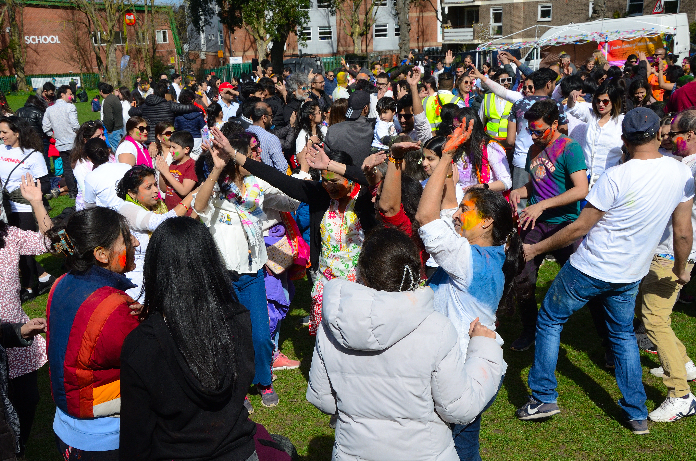
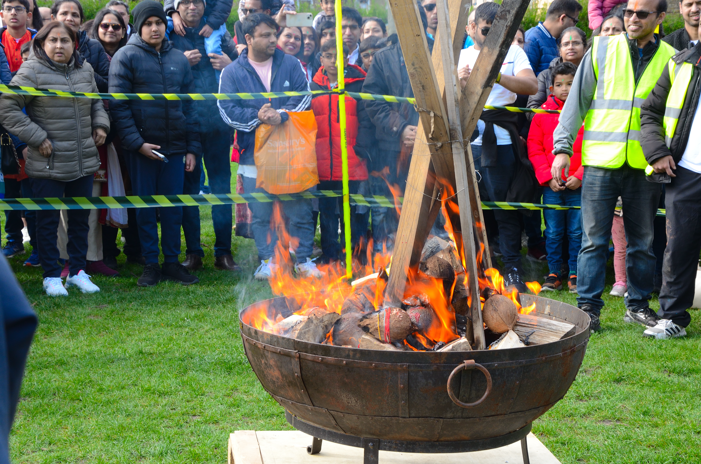
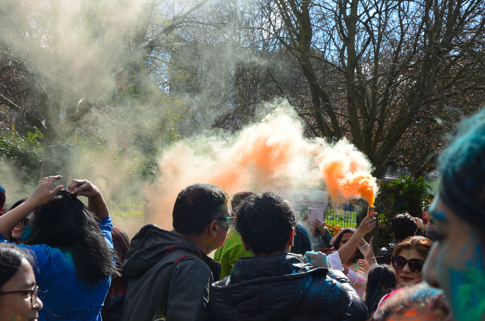

SHCS's Rang Barse Holi Event Paints Manor Park with Vibrancy



On March 24th, the vibrant hues of Holi filled the air in Manor Park as the Sutton Hindu Cultural Society (SHCS) hosted their annual Rang Barse event. Drawing a crowd of over 1000 people from Sutton and beyond, the festival transformed the park into a kaleidoscope of joy and celebration.
The event, which has become a much-anticipated tradition in the community, offered an array of activities and attractions to mark the arrival of spring and the triumph of good over evil. Attendees were treated to pulsating DJ music and the rhythmic beats of the dhol, creating an infectious atmosphere of merriment and camaraderie.
Of course, no Holi celebration would be complete without the iconic throwing of colors, and Rang Barse did not disappoint. Attendees were provided with unlimited colors to play with, resulting in a riot of hues that painted Manor Park in a kaleidoscope of colors. Laughter and cheer filled the air as friends and strangers alike joined in the spirited revelry, casting aside inhibitions and embracing the joyous spirit of the occasion.
Adding to the significance of the event, the Sutton Mayor graced the festivities with their presence, underscoring the importance of community cohesion and cultural diversity. Alongside the Mayor, several Sutton council representatives were also in attendance, further emphasizing the event's significance as a unifying force within the borough.
Speaking about the event, a representative of SHCS expressed their gratitude to all those who contributed to making Rang Barse a resounding success. "Holi is a time for celebration and togetherness, and we are thrilled to see so many members of the community come together to mark this auspicious occasion. Rang Barse is not just a festival; it is a celebration of our shared heritage and the bonds that unite us as a community."
As the sun set on Manor Park, leaving behind a landscape splashed with vibrant colors and echoing with laughter, the spirit of Holi lingered in the air, a testament to the power of community, culture, and celebration.
The Sutton Hindu Cultural Society's Rang Barse event was not merely a festival; it was a testament to the richness of diversity and the strength of unity within the Sutton community, leaving indelible memories in the hearts of all who attended.
For more information about future events hosted by the Sutton Hindu Cultural Society, please visit www.sanatan-hcs.org